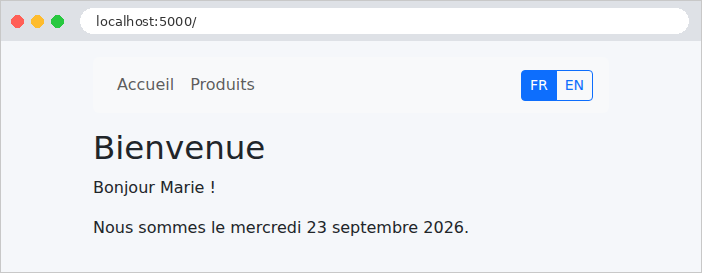
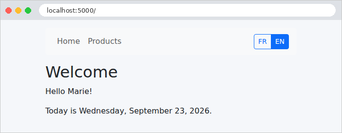

5. Internationalisation
Une application internationalisée affiche ses textes dans la langue de l'utilisateur. L'étude de cas est en français et en anglais. Le principe est simple : les vues ne contiennent plus de textes, mais des clés ([MENU.ACCUEIL]), et un dictionnaire par langue associe à chaque clé son texte. La langue choisie est mémorisée dans un cookie.
L'écosystème [Flask] propose une extension pour cela, [Flask-Babel], qui s'appuie sur le système de traduction standard [gettext] : les textes sont extraits du code par un outil, traduits dans des fichiers [.po], puis compilés en fichiers [.mo]. C'est un système puissant, mais qui demande un outillage et une étape de compilation. Nous écrirons plutôt une petite classe qui lit des dictionnaires JSON : ce sont les mêmes fichiers que ceux des versions [ASP.NET Core MVC], [NestJS] et [Spring MVC] de l'étude de cas, et leur format se lit et s'écrit sans outil particulier. La bibliothèque [Babel], elle, reste utilisée pour la mise en forme des dates et des montants (exemple 16).
5.1. Exemple 22 : une application en deux langues
| 22-i18n/
├── app.py
├── controllers/
│ ├── langue.py
│ └── pages.py
├── i18n/
│ ├── en.json
│ └── fr.json
├── static/css/
│ └── styles.css
├── templates/
│ ├── fragments/
│ │ └── navbar.html
│ ├── layout.html
│ └── pages/
│ ├── accueil.html
│ └── produits.html
└── traduction/
├── formats.py
└── traducteur.py
|
5.1.1. Les dictionnaires
Le fichier [i18n/fr.json] :
| {
"MENU": {
"ACCUEIL": "Accueil",
"PRODUITS": "Produits"
},
"ACCUEIL": {
"TITRE": "Bienvenue",
"BONJOUR": "Bonjour {nom} !",
"DATE": "Nous sommes le {date}."
},
"PRODUITS": {
"TITRE": "Nos produits",
"NOM": "Produit",
"PRIX": "Prix",
"NOMBRE": "{n} produit(s) au catalogue."
}
}
|
Les clés sont regroupées par thème, dans des objets JSON imbriqués : le texte « Accueil » du menu a pour clé complète [MENU.ACCUEIL]. Un texte peut contenir des paramètres, écrits [{nom}], remplacés au moment de la traduction. Le fichier [i18n/en.json] a exactement les mêmes clés :
| {
"MENU": {
"ACCUEIL": "Home",
"PRODUITS": "Products"
},
"ACCUEIL": {
"TITRE": "Welcome",
"BONJOUR": "Hello {nom}!",
"DATE": "Today is {date}."
},
"PRODUITS": {
"TITRE": "Our products",
"NOM": "Product",
"PRIX": "Price",
"NOMBRE": "{n} product(s) in the catalogue."
}
}
|
5.1.2. Le service de traduction : traduction/traducteur.py
| # traduction/traducteur.py : le service de traduction
import json
import re
from pathlib import Path
from flask import g
class Traducteur:
LANGUES = ("fr", "en")
LANGUE_PAR_DEFAUT = "fr"
# {nom} : un paramètre dans un texte
PARAMETRE = re.compile(r"\{(\w+)\}")
def __init__(self, dossier: Path):
# langue -> (clé complète "ACCUEIL.BONJOUR" -> texte)
self._dictionnaires: dict[str, dict[str, str]] = {}
for langue in self.LANGUES:
with open(dossier / f"{langue}.json", encoding="utf-8") as fichier:
self._dictionnaires[langue] = self._aplatir(json.load(fichier))
# la langue gérée qui correspond à [code] : "en" -> "en" ; "de" ou None -> "fr"
@classmethod
def langue(cls, code: str | None) -> str:
return code if code in cls.LANGUES else cls.LANGUE_PAR_DEFAUT
# traduire("ACCUEIL.BONJOUR", nom="Marie") -> "Bonjour Marie !", dans la
# langue de la requête en cours (g.langue, cf. app.py)
def traduire(self, cle: str, **parametres) -> str:
# une clé absente affiche la clé elle-même : un oubli se voit à l'écran
texte = self._dictionnaires[g.langue].get(cle, cle)
# chaque {nom} est remplacé par la valeur du paramètre de même nom
return self.PARAMETRE.sub(
lambda m: str(parametres.get(m.group(1), m.group(0))), texte)
# { "MENU": { "ACCUEIL": "Accueil" } } -> { "MENU.ACCUEIL": "Accueil" }
@classmethod
def _aplatir(cls, noeud: dict, prefixe: str = "") -> dict[str, str]:
resultat = {}
for cle, valeur in noeud.items():
cle_complete = f"{prefixe}.{cle}" if prefixe else cle
if isinstance(valeur, dict):
resultat.update(cls._aplatir(valeur, cle_complete))
else:
resultat[cle_complete] = valeur
return resultat
|
- lignes 11-12 : les langues gérées, et la langue par défaut : des attributs de classe, partagés par tous les objets de la classe, et accessibles sans objet ([Traducteur.LANGUES]) ;
- ligne 15 : l'expression régulière d'un paramètre : une accolade ([\{], précédée d'un [\] car l'accolade a un sens dans les expressions régulières), un ou plusieurs caractères de mot ([\w+]), une accolade fermante. Les parenthèses capturent le nom du paramètre. [re.compile] analyse l'expression une fois pour toutes ;
- lignes 17-22 : le constructeur lit les dictionnaires, une fois, à la création du service. [json.load] convertit le contenu d'un fichier JSON en objets [Python] (des dictionnaires imbriqués). [with open(...) as fichier] ouvre le fichier et garantit sa fermeture à la fin du bloc ; [encoding="utf-8"] est indispensable, car l'encodage par défaut dépend du système (sous [Windows], il n'est pas toujours [UTF-8]) ;
- lignes 25-27 : une méthode de classe (décorateur [@classmethod]) reçoit la classe ([cls]) au lieu d'un objet ; on l'appelle sur la classe : [Traducteur.langue("en")]. Elle rend la langue gérée qui correspond à un code, ou la langue par défaut pour un code inconnu ou absent ;
- lignes 31-36 : la traduction d'une clé, dans la langue de la requête en cours, lue dans [g.langue] (cf. exemple 16). Une clé absente du dictionnaire est affichée telle quelle : un oubli se voit tout de suite à l'écran. Les paramètres sont reçus comme paramètres nommés ([**parametres]) ; la méthode [sub] de l'expression régulière remplace chaque paramètre trouvé dans le texte par le résultat d'une fonction, ici une fonction anonyme ([lambda m: ...]), qui reçoit la correspondance trouvée [m] : [m.group(1)] est le nom capturé, [m.group(0)] le texte complet [{nom}], conservé si le paramètre n'a pas été fourni ;
- lignes 40-48 : les objets JSON imbriqués sont « aplatis » en un seul dictionnaire, dont les clés sont les clés complètes : [{"MENU": {"ACCUEIL": "Accueil"}}] devient [{"MENU.ACCUEIL": "Accueil"}]. La méthode est récursive : elle s'appelle elle-même pour chaque objet imbriqué, avec la clé courante comme préfixe.
| # traduction/formats.py : dates et montants, formatés dans la langue de la requête (cf. exemple 16)
from datetime import date
from decimal import Decimal
from babel.dates import format_date
from babel.numbers import format_currency
from flask import g
# une date en toutes lettres
def date_longue(jour: date) -> str:
return format_date(jour, format="full", locale=g.langue)
# un montant en euros
def monnaie(montant: Decimal) -> str:
return format_currency(montant, "EUR", locale=g.langue)
|
Les filtres de l'exemple 16, qui utilisent cette fois [g.langue]. [Babel] accepte une langue seule ([fr], [en]) aussi bien qu'une langue et un pays ([fr_FR]) ; pour [en], il applique les conventions américaines.
5.1.4. La configuration : app.py
| # app.py : l'application de l'exemple 22
from pathlib import Path
from flask import Blueprint, Flask, g, request
from controllers.langue import COOKIE_LANGUE, langue
from controllers.pages import pages
from traduction import formats
from traduction.traducteur import Traducteur
# Bootstrap, partagé par les exemples (cf. exemple 15)
BOOTSTRAP = Path(__file__).resolve().parent.parent / "commun" / "bootstrap"
def create_app():
app = Flask(__name__)
app.jinja_env.trim_blocks = True
app.jinja_env.lstrip_blocks = True
# le service de traduction : les dictionnaires, lus UNE fois, au démarrage
traducteur = Traducteur(Path(app.root_path) / "i18n")
app.extensions["traducteur"] = traducteur
app.register_blueprint(Blueprint("bootstrap", __name__, static_folder=BOOTSTRAP,
static_url_path="/bootstrap"))
app.register_blueprint(langue)
app.register_blueprint(pages)
# la langue de chaque requête : celle du cookie [langue], le français sinon
@app.before_request
def fixer_langue():
g.langue = Traducteur.langue(request.cookies.get(COOKIE_LANGUE))
# dans les vues : {{ t('CLE') }}, {{ jour | date_longue }}, {{ prix | monnaie }}
app.add_template_global(traducteur.traduire, "t")
app.add_template_filter(formats.date_longue)
app.add_template_filter(formats.monnaie)
return app
if __name__ == "__main__":
create_app().run(port=5000, debug=True)
|
- lignes 20-21 : le service, créé une fois au démarrage. [app.root_path] est le dossier de l'application (celui de [app.py]) ;
- lignes 28-30 : avant chaque action, la langue de la requête : celle du cookie [langue] s'il en existe un et qu'elle est gérée, le français sinon. [request.cookies] est le dictionnaire des cookies envoyés par le navigateur ;
- ligne 33 : la méthode [traduire] du service est offerte aux vues comme fonction globale, sous un nom court, [t] (le second paramètre de [add_template_global]). Une méthode d'objet s'utilise comme une fonction : [traducteur.traduire] est une méthode liée à l'objet [traducteur].
5.1.5. Le choix de la langue : controllers/langue.py
| # controllers/langue.py : le choix de la langue
from urllib.parse import urlsplit
from flask import Blueprint, abort, redirect, request
from traduction.traducteur import Traducteur
langue = Blueprint("langue", __name__)
COOKIE_LANGUE = "langue"
# GET /langue/en : mémorise le choix dans un cookie, puis revient à la page précédente
@langue.get("/langue/<code>")
def changer(code):
if code not in Traducteur.LANGUES:
abort(404)
reponse = redirect(page_d_origine())
# le cookie : un an de vie, illisible par le JavaScript de la page (httponly),
# jamais envoyé avec une requête POST venue d'un autre site (samesite)
reponse.set_cookie(COOKIE_LANGUE, code, max_age=365 * 24 * 3600, httponly=True,
samesite="Lax")
return reponse
# la page d'où l'on vient (entête Referer), dont on ne garde que le chemin :
# rediriger vers une adresse complète venue de la requête permettrait
# d'envoyer l'utilisateur sur un autre site (faille "open redirect")
def page_d_origine() -> str:
url = urlsplit(request.headers.get("Referer", ""))
chemin = url.path
# "//site.com/..." serait compris par le navigateur comme une adresse
# sur un AUTRE site : refusé aussi
if not chemin.startswith("/") or chemin.startswith("//"):
return "/"
return f"{chemin}?{url.query}" if url.query else chemin
|
- ligne 16 : un code de langue inconnu : 404 ;
- ligne 18 : l'action répond par une redirection vers la page d'où vient l'utilisateur : celui-ci retrouve sa page, dans la nouvelle langue ;
- lignes 21-22 : la réponse porte un cookie, que le navigateur renverra à chaque requête. [max_age] est sa durée de vie, en secondes : un an. [httponly=True] le rend invisible au [JavaScript] de la page ; [samesite="Lax"] interdit au navigateur de l'envoyer avec une requête POST venue d'un autre site. Contrairement au cookie de session (exemple 20), ce cookie n'est pas signé : rien de grave si l'utilisateur le modifie, le serveur n'accepte que les langues gérées ;
- lignes 29-36 : la page d'origine est donnée par l'entête [Referer] de la requête (l'orthographe fautive, avec un seul [r], est celle de la norme HTTP), que le navigateur remplit avec l'URL de la page qui contenait le lien. Mais cet entête vient du client, qui peut y mettre n'importe quoi. Rediriger aveuglément vers cette adresse ferait de notre application un redirecteur ouvert (*open redirect*) : un lien piégé, qui porte notre nom de domaine, pourrait envoyer l'utilisateur sur un site malveillant. On ne garde donc que le chemin et les paramètres de l'URL ([urlsplit] la découpe en ses composants), et l'on refuse un chemin qui commence par [//], que le navigateur comprendrait comme l'adresse d'un autre site.
5.1.6. Les actions : controllers/pages.py
| # controllers/pages.py : les actions ne savent rien de la langue : elles
# fournissent des données, les vues les traduisent et les formatent
from dataclasses import dataclass
from datetime import date
from decimal import Decimal
from flask import Blueprint, render_template
pages = Blueprint("pages", __name__)
@dataclass
class Produit:
nom: str
prix: Decimal
@pages.get("/")
def accueil():
return render_template("pages/accueil.html", nom="Marie", aujourdhui=date(2026, 9, 23))
@pages.get("/produits")
def produits():
return render_template("pages/produits.html", produits=[
Produit("Clavier", Decimal("25")),
Produit("Souris", Decimal("12.5")),
Produit("Écran", Decimal("1149")),
])
|
Les actions ne savent rien de la langue : elles fournissent des données brutes (un nom, une date, des montants). La traduction et la mise en forme sont l'affaire des vues.
5.1.7. Traduire dans les vues
| <!doctype html>
{# g.langue : la langue de la requête, "fr" ou "en" #}
<html lang="{{ g.langue }}">
<head>
<meta charset="utf-8">
{# le titre est une CLÉ, fournie par la page (variable cle_titre), traduite par le gabarit #}
<title>{{ t(cle_titre) }}</title>
<link rel="stylesheet" href="{{ url_for('bootstrap.static', filename='css/bootstrap.min.css') }}">
<link rel="stylesheet" href="{{ url_for('static', filename='css/styles.css') }}">
</head>
<body>
<div class="container py-3">
{% include "fragments/navbar.html" %}
<main>
{% block contenu %}{% endblock %}
</main>
</div>
</body>
</html>
|
- ligne 3 : l'attribut [lang] de la page indique sa langue aux navigateurs, aux moteurs de recherche et aux lecteurs d'écran ;
- ligne 7 : le titre de la page est différent pour chaque page, mais il est traduit par le gabarit. Chaque page fournit la clé de son titre dans une variable, [cle_titre].
| <nav class="navbar navbar-expand bg-light rounded mb-3 px-3">
<div class="navbar-nav me-auto">
{# t('CLE') : la traduction d'une clé, dans la langue de la requête #}
<a class="nav-link" href="/">{{ t("MENU.ACCUEIL") }}</a>
<a class="nav-link" href="/produits">{{ t("MENU.PRODUITS") }}</a>
</div>
{# la langue courante est mise en évidence #}
<div class="btn-group btn-group-sm">
{% for code in ["fr", "en"] %}
<a class="btn {{ 'btn-primary' if g.langue == code else 'btn-outline-primary' }}"
href="/langue/{{ code }}">{{ code | upper }}</a>
{% endfor %}
</div>
</nav>
|
- lignes 4-5 : les textes du menu, traduits ;
- lignes 9-12 : un bouton par langue, qui mène à l'action [/langue/<code>]. La langue courante est mise en évidence ([btn-primary], bouton plein).
| {% extends "layout.html" %}
{# une variable définie HORS des blocs est visible du gabarit #}
{% set cle_titre = "ACCUEIL.TITRE" %}
{% block contenu %}
<h1>{{ t("ACCUEIL.TITRE") }}</h1>
{# un paramètre : un paramètre nommé de la fonction t #}
<p>{{ t("ACCUEIL.BONJOUR", nom=nom) }}</p>
{# la date, formatée d'abord, puis passée comme paramètre [date] #}
<p>{{ t("ACCUEIL.DATE", date=aujourdhui | date_longue) }}</p>
{% endblock %}
|
- ligne 3 : une variable définie en dehors des blocs d'une page qui étend un gabarit est visible du gabarit : c'est ainsi que la page lui transmet la clé de son titre. (Une variable définie dans un bloc, elle, resterait locale au bloc.) ;
- ligne 8 : un paramètre du texte est un paramètre nommé de la fonction [t] ;
- ligne 10 : la date, mise en forme dans la langue de la requête, puis passée comme paramètre.
| {% extends "layout.html" %}
{% set cle_titre = "PRODUITS.TITRE" %}
{% block contenu %}
<h1>{{ t("PRODUITS.TITRE") }}</h1>
<table class="table table-sm w-auto">
<thead><tr><th>{{ t("PRODUITS.NOM") }}</th><th class="text-end">{{ t("PRODUITS.PRIX") }}</th></tr></thead>
<tbody>
{% for produit in produits %}
<tr>
<td>{{ produit.nom }}</td>
<td class="text-end">{{ produit.prix | monnaie }}</td>
</tr>
{% endfor %}
</tbody>
</table>
<p>{{ t("PRODUITS.NOMBRE", n=produits | length) }}</p>
{% endblock %}
|
- ligne 17 : un paramètre calculé. Les noms des produits, eux, ne sont pas traduits : ce sont des données, qui, dans une vraie application, viendraient d'une base de données.
5.1.8. Exécution
La page d'accueil, en français (la langue par défaut), puis en anglais après un clic sur le bouton « EN » :


La page des produits, dans les deux langues. Les montants suivent les conventions de chaque langue :


Le changement de langue, observé avec [curl]. L'option [-H] fournit l'entête [Referer] qu'enverrait le navigateur :
| curl -i -H "Referer: http://localhost:5000/produits" http://localhost:5000/langue/en
|
| HTTP/1.1 302 FOUND
Content-Type: text/html; charset=utf-8
Content-Length: 205
Location: /produits
Set-Cookie: langue=en; Expires=Sun, 26 Sep 2027 13:37:04 GMT; Max-Age=31536000; HttpOnly; Path=/; SameSite=Lax
...
|
La redirection ramène à la page d'origine, et le cookie est déposé pour un an. Un [Referer] qui désigne un autre site ne permet pas d'y être redirigé : seul son chemin est conservé.
| curl -i -H "Referer: https://pirate.example/piege" http://localhost:5000/langue/en
curl -i -H "Referer: http://localhost:5000//pirate.example/x" http://localhost:5000/langue/fr
|
| HTTP/1.1 302 FOUND
...
Location: /piege
HTTP/1.1 302 FOUND
...
Location: /
|
La page [/piege] n'existe pas sur notre site : l'utilisateur obtiendra une erreur 404, mais restera chez nous. Enfin, la page d'accueil, demandée avec le cookie [langue=en] (option [-b] de [curl]) :
| curl -b "langue=en" http://localhost:5000/
|
| <!doctype html>
<html lang="en">
<head>
<meta charset="utf-8">
<title>Welcome</title>
...
<a class="nav-link" href="/">Home</a>
<a class="nav-link" href="/produits">Products</a>
...
<h1>Welcome</h1>
<p>Hello Marie!</p>
<p>Today is Wednesday, September 23, 2026.</p>
...
|
Une autre façon de choisir la langue aurait été de lire l'entête [Accept-Language] du navigateur (exemple 12). Les deux se combinent souvent : la langue du navigateur à la première visite, puis celle que l'utilisateur a choisie. L'étude de cas s'en tient au cookie, avec le français par défaut.